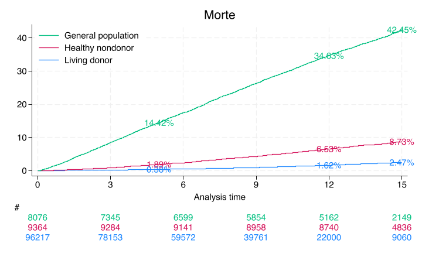

5 Annotation#
Sure, I’ll break down the Stata script into smaller code blocks with notes so you can run them separately in a Jupyter Notebook with the Stata kernel.
Block 1: Setup and Logging#
// Close any existing log files
capture log close
Block 2: Define Globals#
// Set global macros for the repository URL and local directory path
global repo https://github.com/muzaale/forum/raw/main/
global dir ~/documents/melody/local
Block 3: Load Data#
// Open a new log file to record the output
log using jamascript.log, replace
// Load the dataset from the repository
use ${repo}esrdRisk_t02tT, clear
--------------------------------------------------------------------------------
name: <unnamed>
log: /Users/apollo/Documents/Melody/pystata/jamascript.log
log type: text
opened on: 5 Jul 2024, 16:56:21
(Live Kidney Donors + NHANES III Nondonors, Unmatched time_tT + CMS)
Block 4: Initial Data Exploration#
// Display the distribution of the 'donor' variable
tab donor rSMGJcEdF_d
codebook rSMGJcEdF_d
// Generate a new variable 'entry' based on the 'rSMGJcEdF_t0' variable
g entry = rSMGJcEdF_t0
| rSMGJcEdF_d
donor | Censored ESRD Died | Total
---------------------+---------------------------------+----------
Donor | 95,184 99 934 | 96,217
HealthyNondonor | 8,570 17 777 | 9,364
NotSoHealthyNondonor | 4,694 154 3,228 | 8,076
---------------------+---------------------------------+----------
Total | 108,448 270 4,939 | 113,657
--------------------------------------------------------------------------------
rSMGJcEdF_d (unlabeled)
--------------------------------------------------------------------------------
Type: Numeric (byte)
Label: Neph2esrd_d
Range: [0,2] Units: 1
Unique values: 3 Missing .: 0/113,657
Tabulation: Freq. Numeric Label
108,448 0 Censored
270 1 ESRD
4,939 2 Died
Block 5: Data Cleaning and Adjustment#
codebook donor
--------------------------------------------------------------------------------
donor (unlabeled)
--------------------------------------------------------------------------------
Type: Numeric (byte)
Label: Donor
Range: [1,3] Units: 1
Unique values: 3 Missing .: 0/113,657
Tabulation: Freq. Numeric Label
96,217 1 Donor
9,364 2 HealthyNondonor
8,076 3 NotSoHealthyNondonor
// Linkage for donors after 2011 is untrustworthy
replace rSMGJcEdF_d = 0 if rSMGJcEdF_tT > d(31dec2011) & donor == 1
replace rSMGJcEdF_tT = d(31dec2011) if rSMGJcEdF_tT > d(31dec2011) & donor == 1
// Linkage before 1994 is untrustworthy
replace entry = d(01jan1994) if entry < d(01jan1994) & rSMGJcEdF_tT > d(01jan1994) & donor == 1
(2 real changes made)
(95,132 real changes made)
(0 real changes made)
Block 6: Mortality Analysis Setup#
// Set up the survival-time data
stset rSMGJcEdF_tT, origin(rSMGJcEdF_t0) entry(entry) fail(rSMGJcEdF_d==2) scale(365.25)
Survival-time data settings
Failure event: rSMGJcEdF_d==2
Observed time interval: (origin, rSMGJcEdF_tT]
Enter on or after: time entry
Exit on or before: failure
Time for analysis: (time-origin)/365.25
Origin: time rSMGJcEdF_t0
--------------------------------------------------------------------------
113,657 total observations
0 exclusions
--------------------------------------------------------------------------
113,657 observations remaining, representing
4,937 failures in single-record/single-failure data
999,633.48 total analysis time at risk and under observation
At risk from t = 0
Earliest observed entry t = 0
Last observed exit t = 18.18207
Block 7: Generate Kaplan-Meier Estimates#
// Generate Kaplan-Meier survival estimates and save the results
sts list, fail by(donor) at(5 12 15) saving(km, replace)
Failure _d: rSMGJcEdF_d==2
Analysis time _t: (rSMGJcEdF_tT-origin)/365.25
Origin: time rSMGJcEdF_t0
Enter on or after: time entry
Kaplan–Meier failure function
By variable: donor
Beg. Failure Std.
Time total Fail function error [95% conf. int.]
----------------------------------------------------------------------
Donor
5 66051 299 0.0038 0.0002 0.0034 0.0042
12 22000 500 0.0162 0.0006 0.0151 0.0175
15 9068 133 0.0247 0.0010 0.0229 0.0267
HealthyNondonor
5 9184 177 0.0189 0.0014 0.0163 0.0219
12 8741 434 0.0653 0.0026 0.0605 0.0705
15 4839 166 0.0873 0.0030 0.0815 0.0934
NotSoHealthyNondonor
5 6850 1157 0.1442 0.0039 0.1367 0.1520
12 5163 1608 0.3463 0.0053 0.3360 0.3569
15 2150 463 0.4245 0.0059 0.4131 0.4361
----------------------------------------------------------------------
Note: Failure function is calculated over full data and evaluated at
indicated times; it is not calculated from aggregates shown at left.
Only the donor results match Segev, JAMA, 2010 p. 961. The nondonors here are unmatched and so do not yield the same estimates from this paper
A webApp is quick way to approximate these findings using the base-case of the “typical” donor as per Table 1, also on page 961. Namely, 40yo white female with some college education, BMI=28, SBP=120, no hypertension, no history of smoking cigarettes, creatinine 0.9 mg/dL, and eGFR 100 mL/min
Block 8: Summarize Failure Rates#
preserve
use km, clear
replace failure = failure * 100
// Summarize failure rates for living donors at 5, 12, and 15 years
sum failure if donor == 1 & time == 5
local don5y: di %3.2f r(mean)
sum failure if donor == 1 & time == 12
local don12y: di %3.2f r(mean)
sum failure if donor == 1 & time == 15
local don15y: di %3.2f r(mean)
// Summarize failure rates for healthy nondonors at 5, 12, and 15 years
sum failure if donor == 2 & time == 5
local hnd5y: di %3.2f r(mean)
sum failure if donor == 2 & time == 12
local hnd12y: di %3.2f r(mean)
sum failure if donor == 2 & time == 15
local hnd15y: di %3.2f r(mean)
// Summarize failure rates for the general population at 5, 12, and 15 years
sum failure if donor == 3 & time == 5
local gpop5y: di %3.2f r(mean)
sum failure if donor == 3 & time == 12
local gpop12y: di %3.2f r(mean)
sum failure if donor == 3 & time == 15
local gpop15y: di %3.2f r(mean)
restore
(9 real changes made)
Variable | Obs Mean Std. dev. Min Max
-------------+---------------------------------------------------------
failure | 1 .375848 . .375848 .375848
Variable | Obs Mean Std. dev. Min Max
-------------+---------------------------------------------------------
failure | 1 1.623302 . 1.623302 1.623302
Variable | Obs Mean Std. dev. Min Max
-------------+---------------------------------------------------------
failure | 1 2.468609 . 2.468609 2.468609
Variable | Obs Mean Std. dev. Min Max
-------------+---------------------------------------------------------
failure | 1 1.890705 . 1.890705 1.890705
Variable | Obs Mean Std. dev. Min Max
-------------+---------------------------------------------------------
failure | 1 6.528533 . 6.528533 6.528533
Variable | Obs Mean Std. dev. Min Max
-------------+---------------------------------------------------------
failure | 1 8.728806 . 8.728806 8.728806
Variable | Obs Mean Std. dev. Min Max
-------------+---------------------------------------------------------
failure | 1 14.41562 . 14.41562 14.41562
Variable | Obs Mean Std. dev. Min Max
-------------+---------------------------------------------------------
failure | 1 34.63395 . 34.63395 34.63395
Variable | Obs Mean Std. dev. Min Max
-------------+---------------------------------------------------------
failure | 1 42.44794 . 42.44794 42.44794
Block 9: Kaplan-Meier Survival Plot#
// Create a Kaplan-Meier survival plot with risk tables
sts graph, ///
by(donor) ///
fail per(100) ///
xlab(0(3)15) ///
ylab(0(10)40, format(%2.0f)) ///
tmax(15) ///
risktable(, color(stc1) group(1) order(3 " " 2 " " 1 " ") ti("#")) ///
risktable(, color(stc2) group(2)) risktable(, color(stc3) group(3)) ///
legend(on ring(0) pos(11) order(3 2 1) lab(3 "General population") lab(2 "Healthy nondonor") lab(1 "Living donor")) ///
ti("Morte") text(`don5y' 5 "`don5y'%", col(stc1)) text(`don12y' 12 "`don12y'%", col(stc1)) ///
text(`don15y' 15 "`don15y'%", col(stc1)) ///
text(`hnd5y' 5 "`hnd5y'%", col(stc2)) ///
text(`hnd12y' 12 "`hnd12y'%", col(stc2)) ///
text(`hnd15y' 15 "`hnd15y'%", col(stc2)) ///
text(`gpop5y' 5 "`gpop5y'%", col(stc3)) ///
text(`gpop12y' 12 "`gpop12y'%", col(stc3)) ///
text(`gpop15y' 15 "`gpop15y'%", col(stc3))
graph save pilot, replace
graph export ${dir}/pilot.png, replace
Failure _d: rSMGJcEdF_d==2
Analysis time _t: (rSMGJcEdF_tT-origin)/365.25
Origin: time rSMGJcEdF_t0
Enter on or after: time entry
file pilot.gph saved
file ~/documents/melody/local/pilot.png written in PNG format

Compare this non-parametric with a semi-parametric curve:
Block 10: Export Graph#
// Export the survival plot as a PNG file
graph export ${dir}/jamascript.png, replace
file ~/documents/melody/local/jamascript.png written in PNG format
Block 11: Save Processed Data#
// Keep relevant variables for further analysis
keep _* entry age_t0 female race donor
rename age_t0 age
// Save the processed dataset
save ${dir}//jamascript.dta, replace
file ~/documents/melody/local//jamascript.dta saved
Block 12: Cox Proportional Hazards Model#
// Fit a Cox proportional hazards model
noi stcox i.donor, basesurv(s0)
Failure _d: rSMGJcEdF_d==2
Analysis time _t: (rSMGJcEdF_tT-origin)/365.25
Origin: time rSMGJcEdF_t0
Enter on or after: time entry
Iteration 0: Log likelihood = -54332.522
Iteration 1: Log likelihood = -52993.14
Iteration 2: Log likelihood = -51472.516
Iteration 3: Log likelihood = -49543.907
Iteration 4: Log likelihood = -49520.68
Iteration 5: Log likelihood = -49520.548
Iteration 6: Log likelihood = -49520.548
Refining estimates:
Iteration 0: Log likelihood = -49520.548
Cox regression with Breslow method for ties
No. of subjects = 113,657 Number of obs = 113,657
No. of failures = 4,937
Time at risk = 999,633.484
LR chi2(2) = 9623.95
Log likelihood = -49520.548 Prob > chi2 = 0.0000
-------------------------------------------------------------------------------
_t | Haz. ratio Std. err. z P>|z| [95% conf. interval]
--------------+----------------------------------------------------------------
donor |
HealthyNon~r | 4.341779 .2130915 29.92 0.000 3.943586 4.780178
NotSoHealt~r | 26.88098 1.007964 87.78 0.000 24.97625 28.93096
-------------------------------------------------------------------------------
// List the baseline survival estimates
noi list s0 _t donor in 1/10
+-------------------------------+
| s0 _t donor |
|-------------------------------|
1. | .98566928 11.277207 Donor |
2. | .99256749 6.8281999 Donor |
3. | .99351642 6.1711157 Donor |
4. | .99402483 5.6919918 Donor |
5. | .98475171 11.816564 Donor |
|-------------------------------|
6. | .99934972 .90622861 Donor |
7. | .98705221 10.472279 Donor |
8. | .9879412 9.8754278 Donor |
9. | .98766713 10.064339 Donor |
10. | .99994059 .08761123 Donor |
+-------------------------------+
Block 13: Save Baseline Survival and Coefficients#
// Define matrix 'b' with model coefficients
matrix define b = e(b)
// Keep baseline survival estimates
keep s0 _t
// Sort and list baseline survival estimates
sort _t s0
list in 1/10
// Save baseline survival estimates
save ${dir}/s0.dta, replace
export delimited using ${dir}/s0.csv, replace
+-----------------------+
| _t s0 |
|-----------------------|
1. | .00273785 .99998587 |
2. | .00273785 .99998587 |
3. | .00273785 .99998587 |
4. | .00273785 .99998587 |
5. | .00273785 .99998587 |
|-----------------------|
6. | .00273785 .99998587 |
7. | .00273785 .99998587 |
8. | .00273785 .99998587 |
9. | .00273785 .99998587 |
10. | .00273785 .99998587 |
+-----------------------+
file ~/documents/melody/local/s0.dta saved
file /Users/apollo/documents/melody/local/s0.csv saved
// Save model coefficients
matrix beta = e(b)
svmat beta
keep beta*
drop if missing(beta1)
list
save ${dir}/b.dta, replace
export delimited using ${dir}/b.csv, replace
(113,656 observations deleted)
+-----------------------------+
| beta1 beta2 beta3 |
|-----------------------------|
1. | 0 1.468284 3.291419 |
+-----------------------------+
file ~/documents/melody/local/b.dta saved
file /Users/apollo/documents/melody/local/b.csv saved
Block 14: Close Log File#
// Close the log file
log close
name: <unnamed>
log: /Users/apollo/Documents/Melody/pystata/jamascript.log
log type: text
closed on: 5 Jul 2024, 16:56:25
--------------------------------------------------------------------------------